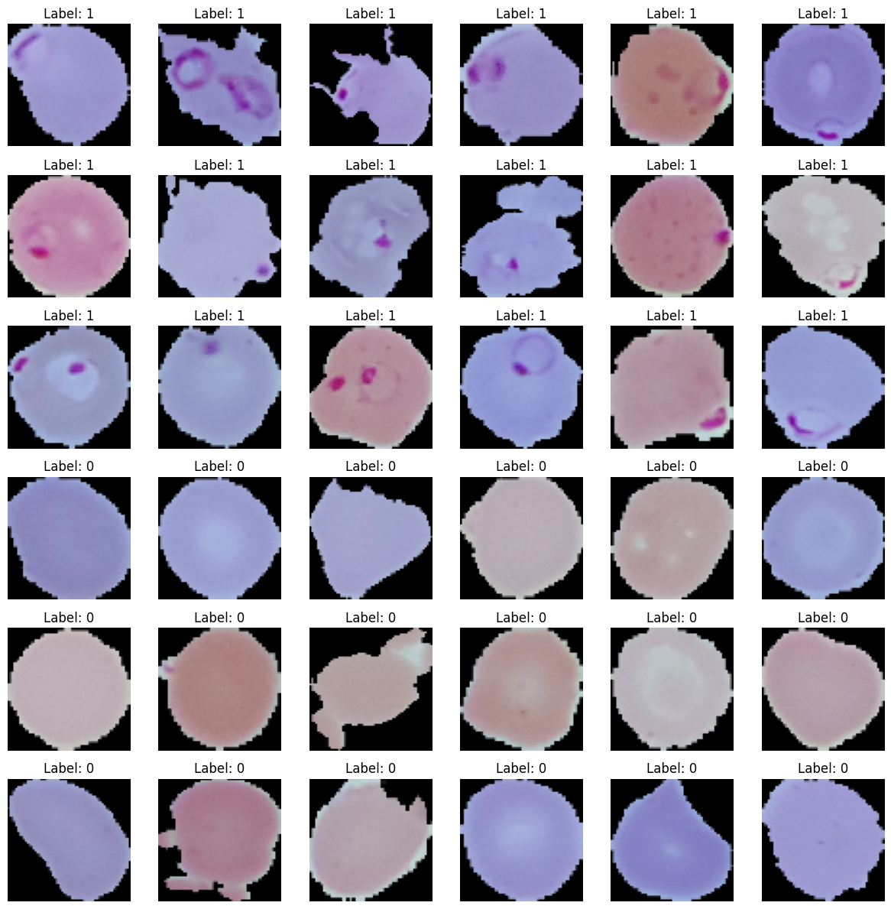
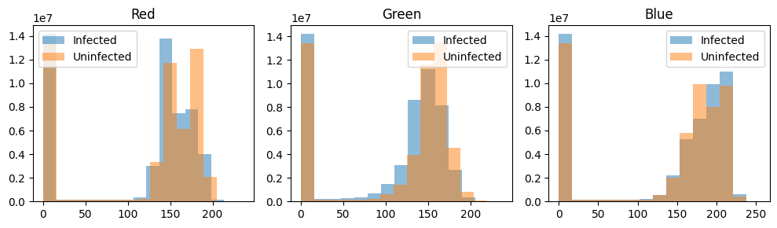
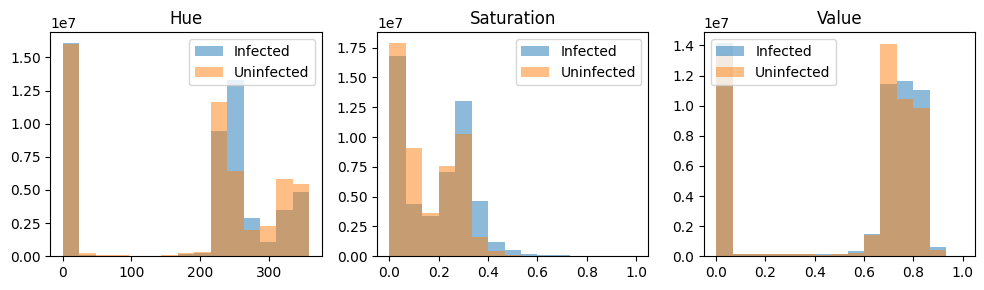

2024-06-12
The notebook for this post can be found here.
I recently learned more about convolutional neural networks (CNNs) and how they are used to analyze images. Now that I understand the basics, I’ve decided to apply this knowledge to a real-world healthcare problem, an area I am passionate about. I found the Malaria dataset on Kaggle and decided to analyze it.
Malaria is a life-threatening disease caused by parasites entering the bloodstream and damaging red blood cells (RBCs). Early detection and treatment are crucial to prevent complications, death, and the spread of the disease within communities. Traditional medical examinations for Malaria detection are time-consuming and require trained professionals whose accuracy depends heavily on their training and experience.
In a series of upcoming blog posts, I will explore how to develop an automated system to detect Malaria from images of a patient’s RBCs using deep learning techniques. The goal is to create a highly accurate and efficient system to distinguish between parasitized and uninfected RBCs in microscopic images.
We aim to create a supervised learning algorithm using a convolutional neural network (CNN) trained on a large labelled dataset of RBC (red blood cell) images. The dataset comprises both parasitized and uninfected cells. Due to Malaria’s potentially fatal nature, we aim to achieve a high recall rate to detect as many cases as possible.
The dataset consists of an equal number of parasitized and uninfected cell images. Initially, we split the dataset into a training dataset with 24,958 images and a test dataset with 2,600 images evenly distributed between parasitized and uninfected cells. The images are coloured microscopic images of RBCs and are categorized as follows:
The following function reads the images, resizes them to 64x64 pixels, and assigns labels (1 for parasitized, 0 for uninfected).
def load_data(data_path):
X, y = [], []
for label, category in zip([1, 0], ['parasitized', 'uninfected']):
path = os.path.join(data_path, category)
for img in tqdm(os.listdir(path)):
img_path = os.path.join(path, img)
img_array = cv2.imread(img_path)
new_image = cv2.resize(img_array, (64, 64))
X.append(np.array(new_image))
y.append(label)
return X, y
X_train, y_train = load_data(TRAINING_DATAPATH)
X_test, y_test = load_data(TESTING_DATAPATH)After we imported the images, we found they all had different dimensions. A simple CNN model expects all input images to be the same size, so we must resize them to 64x64 pixels. In addition, we have assigned numbers to the labels, where we use 1 for parasitized and 0 for uninfected cells. Our training set now consists of 24,981 images, and our test set comprises 2,600 images. Each image has 64x64 pixels and three colour channels (RGB).
Now, we will display some images of parasitized and uninfected cells. The main distinguishing feature between parasitized and uninfected red blood cells (RBCs) is the presence of purple spots or circles on the parasitized RBCs.

Given that the presence of purple spots seems to differentiate the parasitised from the uninfected, this informaiton must also show up in the images’ color informaiton. An RGB image has three channels, so let’s plot the histogram of each channel

With our prior knowledge that the presence of purple color can be an important feature in detecting Malaria, we consult image segmentation literature for clues. Burdescu et al. shows that the image segmentation task is easier for images in the HSV (Hue, Saturation, Value) colour space. We, therefore, transform each image into HSV space and normalize each channel again.
X_train_hsv = []
for image in X_train_rgb_normalized:
hsv_image = cv2.cvtColor(image, cv2.COLOR_RGB2HSV).astype('float32')
X_train_hsv.append(hsv_image)
Another preprocessing step is applying Gaussian blurring to each image to lessen the role of the edges. For some image classification, the edge is an important feature, but in our case, we want to isolate colour and downplay the importance of the edge features.
def gaussian_blur(images, kernel_size=(3, 3), sigma=0, border_type=cv2.BORDER_DEFAULT, hsv_ranges = np.array([360, 1, 1])
):
blurred_images = []
for image in images:
blurred_images.append(
cv2.GaussianBlur(image, kernel_size, sigma, border_type)
)
blurred_images_np = np.stack(blurred_images, axis=0)
blurred_images_normalized = blurred_images_np / hsv_ranges
return blurred_images_normalized
X_train_blur_normalized = gaussian_blur(X_train_hsv)These preprocessing steps together can potentially enhance the features that distinguish parasitized from uninfected cells and reduce image noise.
In the next post of this series, we will dive into building and training our deep-learning models for Malaria detection. Stay tuned!